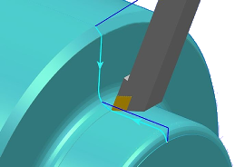
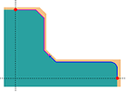
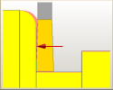
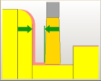
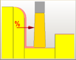
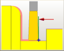
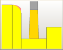

Machining corners
What is it?
The cut strategies Towards Corner and Away from Corner now recognize corners with embedded fillets or chamfers.

You use the Cut Fillets option to control the machining of the fillet or chamfer. Fillets and chamfers can be:
-
Added to faces exclusively.
-
Added to diameters exclusively.
-
Split in the middle. One segment is added to face and the other to the diameter.
-
Omitted.
For the Towards Corner cut strategy, the Cut Fillets option is available only if Stop Position is set to None. Also, the following parameters are added to this cut strategy to control the generated cuts:
-
Extend at Start
-
Stop Position
-
Overlap
The Extend at Start option is available for machining into corners.
Extend at Start
Use the Extend at Start options to machine into corners.
-
None machines only the segments along the diameter and the face. No extensions are made.
-
To Containment Geometry lets you add adjacent segments to the start of the initial cut segment.

-
Include Adjacent Chamfers or Rounds lets you add an adjacent chamfer or an adjacent blend to the start of a cut segment.
Stop Position
Use the Stop Position options to adjust the intersection of the face and diameter cuts. The options can either extend the face cut and shorten the diameter cut, or extend the diameter cut and shorten the face cut.
-
None stops the tool at the end of the first cut.
If the corner contains a fillet or a chamfer, you can adjust the stop position by using the Cut Fillets option.

-
Distance sets the value for the distance at which the tool stops away from the corner.

-
Percent of Cut sets the percentage of the cut distance as the distance at which the tool stops away from the corner.

-
Point lets you define a position at which the tool stops away from the corner.

Overlap
Use the Overlap option to ensure a full cleanup in the corner where the two tool paths intersect.
-
None of the tool will overlap.

-
Distance of the tool width that will overlap.

-
% Tool of the tool width that will overlap.

Where do I find it?
|
Application |
Manufacturing |
|
Prerequisite |
A Turning finish operation that contains a chamfer or fillet. Cut Strategy must be set to Towards Corner or Away from Corner. |
|
Location in dialog box |
Finish operation dialog box→Path Settings group→
|